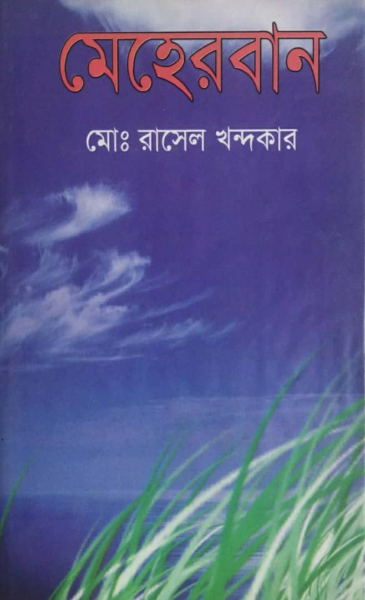

Poetry Collection

MEHERBAN is a collection of poems that reflect solitude, human emotion, love, and the silent struggles within the heart.
Each poem carries a piece of experience, a moment of feeling, and a voice seeking meaning. Every feeling has been captured within these 52 poems.
'মেহেরবান' হলো এমন একটি কবিতা সংকলন যা নিঃসঙ্গতা, মানবিক আবেগ, ভালোবাসা এবং হৃদয়ের নীরব সংগ্রামকে প্রতিফলিত করে।
প্রতিটি কবিতায় রয়েছে এক টুকরো অভিজ্ঞতা, এক মুহূর্তের অনুভূতি এবং অর্থসন্ধানী এক কণ্ঠস্বর। এই ৫২টি কবিতার মধ্যে প্রতিটি অনুভূতিই ধারণ করা হয়েছে।
সূচিপত্র
Click on a poem title to read
— ০১ —
আকাশ ভরা তারা, ইহানিয়ে যাচ্ছে কারা? ওরা কি তারা, দেশ জয় করবে যারা? শুনেছি দেশ নাকি, স্বাধীন হতে একটু বাকি। জয় মোদের হবে কি? নির্ভয়ে পথ চলবো কি? পাকহানাদারদের জখম করে, শোষণ শাসন বন্ধ করে লাল সবুজের নিশানাটি, উড়াতে মোরা পারবো কি? অবশেষে রটনা করলাম, অবিশ্বাস ঘটনা। নতুন করে শুরু করলাম, বাংলাদেশের সূচনা। মোরা এখন নয় পরাধীন, স্বাধীন মোরা, এখন স্বাধীন।
↑ সূচিপত্রে ফিরুন— ০২ —
পাশে রেখে ক্ষুধার্ত খেওনা কো অন্ন, গরীব দুঃখী কাউকে দেখোনাকো ভিন্ন। বৃক্ষ যেমন মানবের তরে বিলায় নিজ অস্তিত্ব। সবার তরে রেখে যেও তুমিও নিজ কৃতিত্ব। পরের দুঃখে হেসোনা অনুভব কর নিজে। তার জায়গায় তুমি হলে থাকতে যে চোখ বুজে। হাসিওনা হে মানব দেখিয়া পরের দুঃখ। দেখ আগে নিজেরই আছে কেমন সুখ। হৃদয় দিয়ে ভালবাসলে সকল মানুষকে। বন্ধুর মত ভালবাসবে খোদা তোমাকে। বড়াই করোনা মাটি নিয়ে তুমি নিজে মাটি। মাটি তোমাকে ছাড়বে না যদি না হও খাঁটি। সবার তরে এমন জিনিস রেখে যেও পারলে। মরণের পরেও কেউ তোমায় যেন নাহি ভোলে।
↑ সূচিপত্রে ফিরুন— ০৩ —
দেশের ডাকে ঘর থেকে যুদ্ধে যাবার বেলা। বিদায় চাইল মায়ের কাছে খোকা সকাল বেলা। বলল মা যাসনে খোকা ভয় ওদের পাই। ওদের মত অস্ত্র শক্তি তোদের যে নাই। বলল খোকা হাসতে হাসতে ভয় পেয়োনা তাদের। মোদের মত সাহস বুদ্ধি নেইতো মা ওদের। রক্ত দিবো দেশের জন্য খুশিতে দেব জীবন। ধন্য হবো দেশের জন্য হয় যদি মা মরণ। যুদ্ধ করবো লড়াই করবো স্বাধীন করবো দেশ। নতুন করে গড়ে তুলবো সোনার বাংলাদেশ। আসি মা থেকো ভাল দেখা হবে বাঁচলে। কেঁদোনা মা যুদ্ধ থেকে আমি না ফিরলে। সেই থেকে মা খোকার আশায় পথ চেয়ে থাকে। যুদ্ধ শেষ তবু খোঁজে শত লোকের ঝাঁকে। যুদ্ধ শেষে কত যোদ্ধা ফিরলো হাসি মুখে। খোকার আশায় অশ্রু ঝরে মায়ের দুটি চোখে।
↑ সূচিপত্রে ফিরুন— ০৪ —
জন্ম দিতে রেখেছো তুমি, অসীম অবদান পারেবোনা দিতে তোমার, কষ্টের প্রতিদান। গর্ভ হতে দিয়েছি, শতবর্ণের যাতনা দিয়েছি লাথি মেরে, সীমাহীন বেদনা। তোমার ব্যথা চিৎকারে, কেঁপে উঠতো ভূমি শত ব্যথা পেয়েও, রাগ করোনি তুমি। নাওয়া খাওয়ায় হতো কষ্ট, তবু খেয়েছো নিজে খেয়ে আমাকে, সুস্থ রেখেছো। যন্ত্রণাতে করতে ছটফট, তবু সয়েছো তীব্র ব্যথায় কখনো, কেঁদে দিয়েছো। চরম এই আর্তনাদেও, ভেবেছো মোরে রত্ন বাহির থেকে করেছো, যথাসম্ভব যত্ন। কষ্ট হতো হাঠতে তোমার, হতো কষ্ট বসতে পারতে না আরাম করে, বিছানাতে শুতে। কভু যদি মনে হতো, কোন কাজের কথা করতে না আমায় ভেবে, পাই যদি ব্যথা। মেনেছো বহু বিধান, আমার ভালোর জন্য কষ্ট হলেও করেছো, কঠিন বিধান গণ্য। ভেবেছো যতটুকু, নিয়ে নিজেকে তারো বেশি ভেবেছো, নিয়ে আমাকে। ভালোবাসো তুমি মোরে, দিয়ে মন প্রান পারেবোনা দিতে তোমার, স্নেহের প্রতিদান। অমূল্য রতন তুমি, নেই সন্দিহান তোমার ঋণ শোধের, নেই সমাধান। যতনে রাখিয়া গর্ভে, দেখিয়েছো ধরণী অসীম ব্যথা সয়েছো, ওগো মোর জননী। গর্ভকালীন বেদনা, পরান তোমার সয়নি তবু ভাব ধন্য, হয়ে গর্ভধারিণী।
↑ সূচিপত্রে ফিরুন— ০৫ —
আঁখি মেলে নয়ন ভরে দেখেছি মায়ার ভুবন। জানিনা হঠাৎ কখন এসে যায় মরণ। বুক কাঁপে যখন শুনি মরনের নাম। তাইতো মনে প্রশ্নজাগে জীবনের কি দাম। মরণ সেতো এক নদীর ফাটা পাড়। কখন যেন ভেঙে যায় সেই নদীর পাড়। নিত্য নতুন কত কাজ করি সুন্দর মনে। সব কাজ মুছে যাবে কঠিন সেই মরনে। চোখের জলে ভরবে মধুর আপন নীড়। শীতল হয়ে যাবে আমার সোনার শরীর। স্মৃতি হয়ে রবো সবার হৃদয়েত। হয়তো কেউ দেখবে স্বপ্নে গভীর রাতে। মায়াবী এ ভুবনে আমি অতিথি পাখি। নিভে যাবে হঠাৎ আমার দুটি আঁখি।
↑ সূচিপত্রে ফিরুন— ০৬ —
ভুবনের সব কিছু তুমি মোদের করেছো দান। শুকরিয়া তোমার তরে হে রহিম রহমান। পরম দয়ালু তুমি মোদের করেছো দয়া। মোদের প্রতি তোমার আছে অসীম মায়া। দিয়েছো পাহাড়, সাগর মিষ্টি ফুলের বাগান। বৃক্ষ, জল সকলই তোমার মেহেরবান। দিয়েছো নদী ভরা অফুরন্ত জল। বৃক্ষ ভরে দাও আবার নানা রকম ফল। তোমার দেওয়া সূর্য আলোকিত করে ভুবন। সব কিছু তাইতো দেখতে পায় নয়ন। বাঁচার জন্য দিয়েছো তুমি মধুর শীতল বাতাস। নিতে পারি তাইতো মোরা প্রাণ ভরে নিঃশ্বাস। জল ভরা মাছ জমি ভরা ধান। আছে যত ফসল সবই তোমার দান। সিন্ধু, নদী, ঝর্না আছে যত পানি। পুষ্প, রতন সকলই তোমার মেহেরবানী। সীমাহিন নেয়ামত তুমি মোদের করেছো দান। যাবেনা শেষ করা তোমার গুনগান।
↑ সূচিপত্রে ফিরুন— ০৭ —
এই মায়ার ভুবন আমি পারেবোনা ছাড়তে। পারেবো না আমি একা আধারে থাকতে। জীবনের যত চাওয়া আছে যত আশা। সবই থাকবে পরে ছাড়তে হবে বাসা। প্রিয় কত মুখ কত আপন স্বজন। থাকতে কি পারেবো? ছেড়ে মায়ার বাঁধন। সুন্দর এই পৃথিবীতে থাকতে সাধ জাগে। খোদাজানে কত দিন আছে কার ভাগে। জীবন মানে ছোট্ট মোম একদিন গেল যাবে। টাকা পয়সা ধনসম্পদ সঙ্গে নাহি যাবে। জীবন থাকতে কত মানুষ পাশে ছিল যে। মৃত্যুর পরে সবাই আমায় ভুলে থাকবে যে। এমন সময় বিধি আমায় নিয়ে যেও তুমি। ন্যাক আমেল পরিপূর্ণ হই যখন আমি।
↑ সূচিপত্রে ফিরুন— ০৮ —
জন্ম হয় মানুষের কাঁদিতে কাঁদিতে। গর্ভ হতে আসে যখন মায়ের আঁচলেতে। কান্না দিয়ে শুরু হয় জীবনের পথ চলা। ভরে থাকে কান্নায় জীবন নামের ভেলা। স্বপ্নের এই দুনিয়ায় অনেকের নেই ঠিকানা। হৃদয়টা ঘিরে থাকে শত রঙের বেদনা। শত রঙের মানুষ আছে ভুবন ভরিয়া। শত রঙের কান্না তেমন চক্ষু জুড়িয়া। কেউ কাঁদে কষ্ট পেয়ে কেউ কষ্ট দিয়ে। কেউ আবার কান্না নীরবে যায় সয়ে। দুঃখ পেয়ে কারো মন ভেঙে যায়। কারো আবার দুচোখের জল ঝরে যায়। কেউ কাঁদে নীরবে মুখে রেখে হাত। কেউ কাঁদে গভীর হয় যখন রাত। কারো কান্নায় চোখের জল অঝর ধারায় ঝরে। বর্ষাকালের পানিতে মাঠ যেমন ভরে। নদী ভাঙলে পানিকে আটকে রাখা যায় না। কান্না পেলে চোখের পাতা ধরে রাখা যায় না। নানা রকম যন্ত্রনা আসে নানা ক্ষণে। কান্না দিয়ে শান্তনা পায় কেউ মনে। কান্না দিয়ে শুরু হয় মানুষের জীবন। তেমনি আবার কান্না বেয়ে আনে মরণ। আঁধার ছাড়া যেমন আলো আসে না। কান্না ছাড়া তেমন হাসি আসে না।
↑ সূচিপত্রে ফিরুন— ০৯ —
একটু সুখ চাই চাই সুখের নিঃশ্বাস। আসবে সুখ একদিন আছে এই বিশ্বাস। বিচিত্র সব মানুষের বিচিত্র বর্ণের যাতনা। সুখ থাকে আড়ালে দেখা যায় বেদনা। ক্রমধারায় আসার কথা হাসির পরে কান্না। তবু কেন বেয়ে যায় সুধু দুঃখের বন্যা। সংগ্রামী এই জীবনে আসবে নানা ব্যর্থতা। এরই মাঝে লুকায়িত সকল কাজের সার্থকতা। জীবনের প্রতি মুহূর্ত মানুষ সুখে থাকে। যদি সে সুখকে অনুভব করে থাকে। অনেকে বলে হায় সুখের সময় দ্রুত যায়। দুঃখটা কেন এত দেরি করে যায়। সময় যায় একই ভাবে দুঃখ সুখ তেমনি। যে যেমন অনুভব করে বোঝে সে তেমনি। দুখের পরে আসবে সুখ বুঝতে সকলকে হবে। সুখের আশায় অবশ্যই ধৈর্য ধরতে হবে। হাসি কান্না মিলেই হয়ে থাকে জীবন। তাই তো সারাক্ষণ দুঃখ সুখের আবরণ। সময় কাটুক যেমনি ভেবে নেব সুখ। সারাক্ষণ হাসি খুশি থাকে যেন মুখ।
↑ সূচিপত্রে ফিরুন— ১০ —
সাঁঝের বেলায় উঠে তুমি আলোকিত কর ভুবনকে রোদেলা আকাশ নীলদিয়ে মুগ্ধ কর সবাইকে। সমস্ত আলো তোমায় ঘিরে তুমি সব শক্তির মূল। তোমায় পেয়ে বেড়ে উঠে সৃষ্টির সব বৃক্ষ মূল। রাত্রি কাটে অন্ধকারে তোমায় দেখার আশায়। তোমার রোদের ঝলক দেখে মাঝি তরী ভাসায়। তোমায় দেখে লাঙল হাতে চাষী মাঠে যায়। তোমার আলোয় একা বসে বাউল গান গায়। তোমার মাঝে আছে কি ভেবে তো না পাই। আশ্চর্য প্রদীপ তুমি আজ বুঝে যাই। তুমি অসীম অতুলনীয় তোমায় পেয়ে মোরা ধন্য। বেঁচে আছি পৃথিবীতে তোমার আলোরই জন্য।
↑ সূচিপত্রে ফিরুন